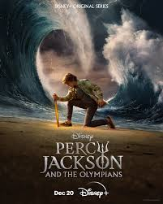
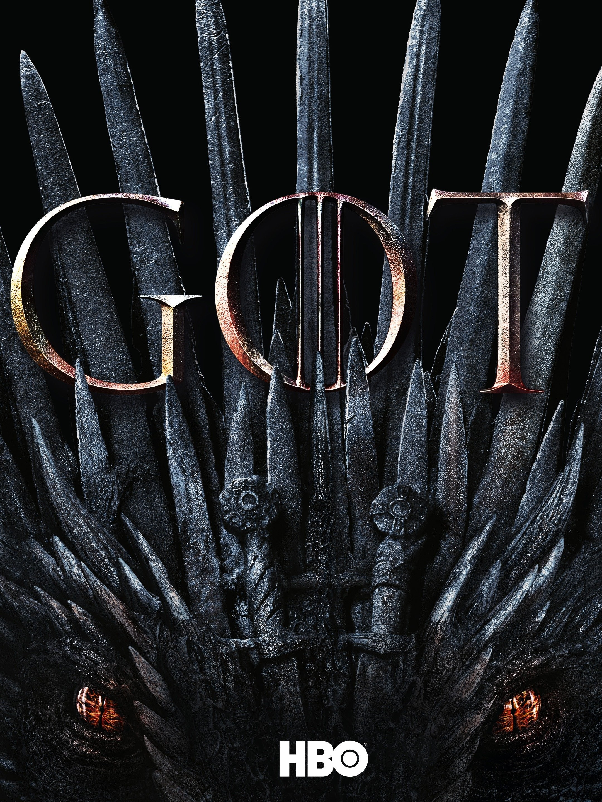

WandaVision (2021)
Blends the style of classic sitcoms with the MCU, in which Wanda Maximoff and Vision - two super-powered beings living their ideal suburban lives - begin to suspect that everything is not as it seems.

Stranger Things (2016-2025)

When a young boy vanishes, a small town uncovers a mystery involving secret experiments, terrifying supernatural forces and one strange little girl.

Percy Jackson and the Olympians (2023-)
Demigod Percy Jackson leads a quest across America to prevent a war among the Olympian gods.
The Last of Us (2023)

After a global pandemic destroys civilization, a hardened survivor takes charge of a 14-year-old girl who may be humanity's last hope.


Game of Thrones (2011-2019)
Nine noble families fight for control over the lands of Westeros, while an ancient enemy returns after being dormant for a millennia.